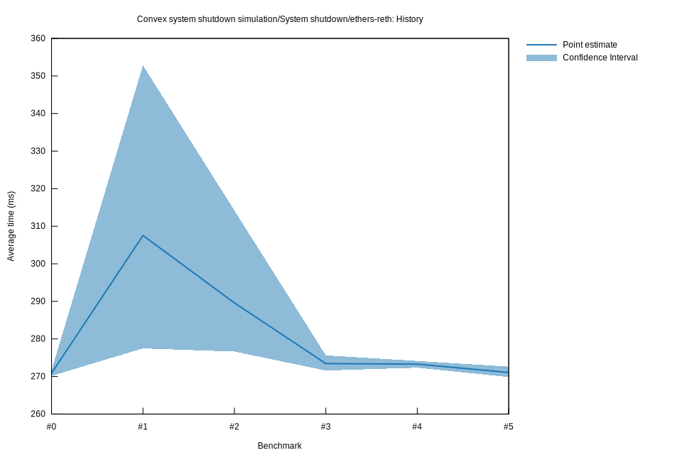

# 52023-06-11T20:42:14Z
|
Lower Bound |
Estimate |
Upper Bound |
| Value: |
269.86ms |
271.05ms |
272.62ms |
| Change in Value: |
-1.3517% |
-0.8201% |
-0.0500% |
No change in performance detected.
# 42023-06-11T19:58:34Z
|
Lower Bound |
Estimate |
Upper Bound |
| Value: |
272.34ms |
273.30ms |
274.14ms |
| Change in Value: |
-0.9056% |
-0.0510% |
+0.7047% |
Change within noise threshold.
# 32023-06-11T19:55:02Z
|
Lower Bound |
Estimate |
Upper Bound |
| Value: |
271.58ms |
273.43ms |
275.62ms |
| Change in Value: |
-13.203% |
-5.5793% |
-0.7523% |
Change within noise threshold.
# 22023-06-11T19:53:12Z
|
Lower Bound |
Estimate |
Upper Bound |
| Value: |
276.64ms |
289.59ms |
314.18ms |
| Change in Value: |
-19.824% |
-5.8355% |
+8.4059% |
Change within noise threshold.
# 12023-06-11T19:49:45Z
|
Lower Bound |
Estimate |
Upper Bound |
| Value: |
277.48ms |
307.54ms |
352.81ms |
| Change in Value: |
+2.4202% |
+13.537% |
+29.598% |
Performance has
regressed
# 02023-06-11T19:46:23Z
|
Lower Bound |
Estimate |
Upper Bound |
| Value: |
270.16ms |
270.87ms |
271.62ms |